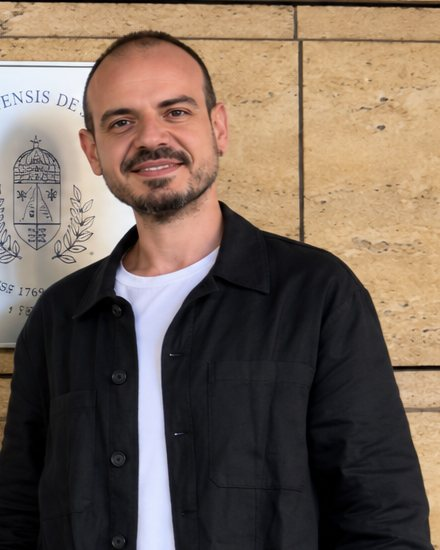

Anatomi·Mikro-BT·Adli bilimler·Yapay zekâ
Doç. Dr. Mert Ocak
İnsan kemiklerinin ve dişlerinin iç mimarisini mikron ölçeğinde ölçen bir anatomist. Mikro-BT görüntülemeyi klinik anatomi, adli bilimler ve yapay zekâ ile bir araya getiriyor.
Ankara Üniversitesi · Diş Hekimliği Fakültesi · Temel Tıp Bilimleri Bölümü
- Yayın
- 225
- WoS yayını
- 92
- Toplam atıf
- 697
- h-indeks
- 15
- Proje
- 17
Kaynak: AVESİS, 18 Ekim 2026. Listelerde mükerrer kayıtlar birleştirildi.
SENTETİK TRABEKÜLER ÇEKİRDEK
BV/TV 0.00
Gyroid tabanlı sentetik bir trabeküler kemik örneği. Tarama düzlemi ilerledikçe hacim yeniden oluşturulur; dairesel pencere o düzlemin aksiyel kesitini gösterir.
Hakkında
Ankara Üniversitesi
Mert Ocak, Ankara Üniversitesi Diş Hekimliği Fakültesi Temel Tıp Bilimleri Bölümü'nde anatomi doçentidir. Ankara Üniversitesi Veteriner Fakültesi'nden mezun olduktan sonra Hacettepe Üniversitesi'nde anatomi doktorasını tamamladı; tezinde temporomandibular eklemin anatomik ölçümlerini konik ışınlı bilgisayarlı tomografi ile değerlendirdi. TÜBİTAK 2219 bursuyla Case Western Reserve University Makine ve Havacılık-Uzay Mühendisliği Bölümü'nde doktora sonrası araştırma yaptı ve tendon damarlanmasını mikro-BT ile görüntüledi.
Çalışmalarının merkezinde kemik ve diş dokularının mikro-BT ile ölçülen üç boyutlu mikromimarisi yer alıyor. Diş hekimliği, ortopedi ve adli bilimler ekipleriyle hacimsel ölçüm protokolleri geliştiriyor; son çalışmalarında radyografilerden yaş ve cinsiyet tahmini için derin öğrenme modelleri kuruyor. Diş Hekimliği Fakültesinde Erasmus bölüm koordinatörü ve Uluslararası Öğrenci Birimi koordinatörüdür; Scientific Reports ve BMC Oral Health dergilerinde kurul üyesidir.
Araştırma alanları
8 başlıkYayınlar sekiz başlıkta gruplandı. Bir çalışma birden fazla başlıkta yer alabilir; bir kartı seçtiğinizde ilgili sekme açılır.
Sonlu elemanlar analizi
FreeCAD FEM · Gmsh · CalculiXMandibulada ısırma ve kas yüklerinin oluşturduğu gerilmeler sonlu elemanlar yöntemiyle hesaplanıyor. Kayıtlar, açık kaynaklı FreeCAD FEM, Gmsh ve CalculiX ile kurulan bir gösterim modeline aittir.
İş akışı
Yayımlanmış FEA çalışmaları
Yayınlar
2014–2026Kaynak: AVESİS özgeçmişi, 8 Ekim 2026. Tekrarlanan kayıtlar ve bir düzeltme notu birleştirildi; AVESİS'e henüz girilmemiş ISCAA 2026 sunumu eklendi. Dergi eklerinde yayımlanan kongre özetleri bildiriler arasında gösterilir. DOI bağlantıları PubMed ve Crossref ile eşleştirildi; DOI'si olmayan kayıtlar Google Akademik aramasına bağlanır. Kısa özetler, makalelerin yayımlanmış özetlerinden hazırlanmıştır.
Projeler ve fikri mülkiyet
TÜBİTAK · BAP · Ulusal AjansAçık eğitim kaynağı
Patent ve faydalı model
Akademik hizmet
Akademik yaşamdan
Viyana · Budapeşte · AnkaraÖzgeçmiş
2006–2026Tez danışmanlığı
Verdiği dersler
İletişim
Ankara · Türkiyeİş birliği, ortak proje ve mikro-BT analizleri için yazabilirsiniz.
- E-posta
- mocak@ankara.edu.tr
- Telefon
- +90 312 296 55 41
- Adres
- Ankara Üniversitesi Diş Hekimliği Fakültesi, Temel Tıp Bilimleri Bölümü, Ankara